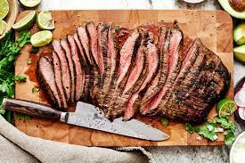

Carne Asada

Description
Carne asada is grilled and sliced beef, usually chuck steak, though skirt steak, flap steak, or flank steak
can also be used. It is usually marinated then grilled or seared to impart a charred flavor. Carne asada
can be served on its own or as an ingredient in other dishes.
Ingredients
- 2 limes juiced
- 4 cloves garlic crushed
- 1/2 cup oragne juice
- 1 cup chopped fresh cilantro
- 1/2 teaspoon salt
- 1/4 teaspoon black pepper
- 1/4 vup vegetable oil
- 1 jalapeno minced
- 2 tablespoons white vinegar
- 2 pounds fland or skirt steak
Steps
- In a gallon size resealable bag, combine lime juice, crushed garlic, orange juice, cilantro, salt, pepper, vegetable oil,
jalapeno, and vinegar. Squeeze it around to mix it up.
- Put the entire flank steak into the resealable bag. Seal it up tight. Make sure all the meat
is exposed to the marinade, squishing the bag around to coat. Refrigerate for at least 2 hours, or overnight.
- Heat an outdoor grill to high heat.
- Remove the flank steak from the marinade, and discard excess marinade.
Cook on the grill for 7 to 10 minutes per side.
- Once done, remove from heat and let rest 10 minutes.
Slice against the grain, and serve.